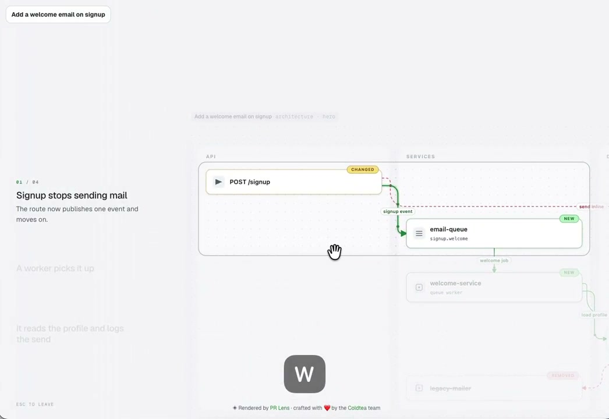
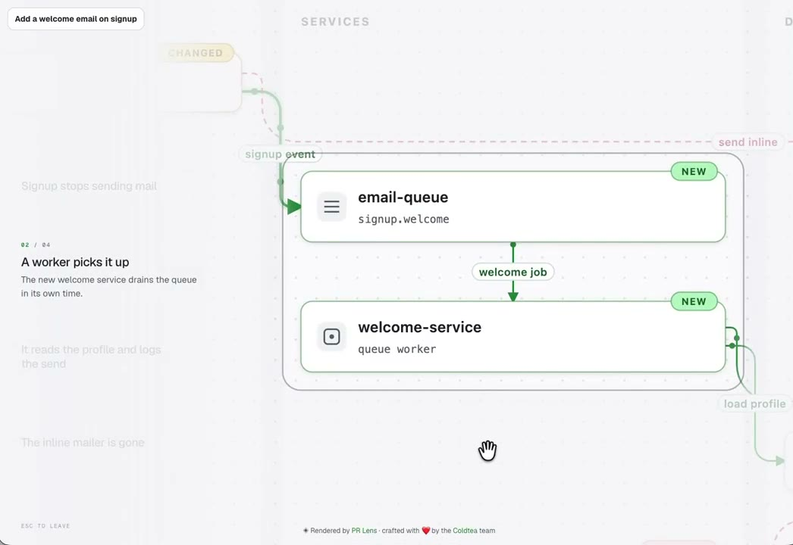
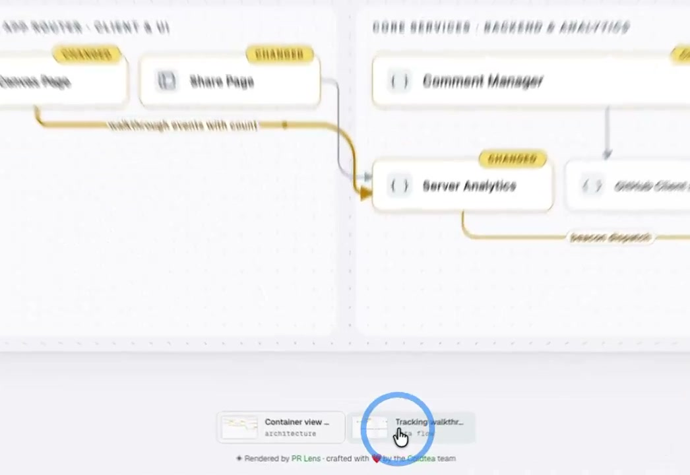

圆角框圈住产品上的一块，其余变淡。镜头平移过去。左边按步讲解。
浅灰点阵画布。一张产品图铺开。走查开始后，左边列出步骤，画布上出现圆角框，框外发白。镜头平移、拉近，让这一块停在画面中间。
原帖是 PR Lens 的 18.8 秒演示，1600 级画幅里是 1046×720、60fps。本页收圈选和运镜，不收他们的架构图和 PR 工具壳。画布换成一扇产品窗：写、核对、发布。

镜头是视口对整张画布做 translate + scale，原点在左上。圈选是画布上的圆角矩形，用大一圈的白影把框外盖住。框和镜头走同一条 820ms 缓动，框跟着世界走，描边不会在屏幕上独自滑动。
左边步骤是一份目录。当前步黑，其余接近底色。点一步，手移过去，蓝圈在指尖闪一下，镜头和框同时到新的一块。
整卡巡游仍走 bento。这里多出来的是框：先圈，再让周围退开，镜头才有东西可跟。


| 项目 | 取值 |
|---|---|
| 原件 | 18.8s，1046×720，60fps。走查四步 |
| 画布 | 1080×640。点阵 18px。底 #f7f7f8 |
| 镜头 | 820ms cubic-bezier(.22, 1, .36, 1)。translate + scale，原点 0 0 |
| 圈选 | 圆角 20px，描边 1.5px。白影 120vmax，透明度 .62 |
| 蓝圈 | 46px，#2f6dff，520ms 放大淡出 |
| 步骤 | 每步停 2.4s。点目录会停住自动走查 |
#lasso#viewtranslate + scale。原点左上。#narrator